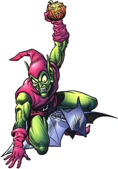

Duende Verde
O Duende Verde é um dos principais inimigos do Homem-Aranha. Conhecido por sua inteligência, tecnologia avançada e personalidade instável, tornou-se um dos vilões mais perigosos do universo Marvel.

O Duende Verde é um dos principais inimigos do Homem-Aranha. Conhecido por sua inteligência, tecnologia avançada e personalidade instável, tornou-se um dos vilões mais perigosos do universo Marvel.
